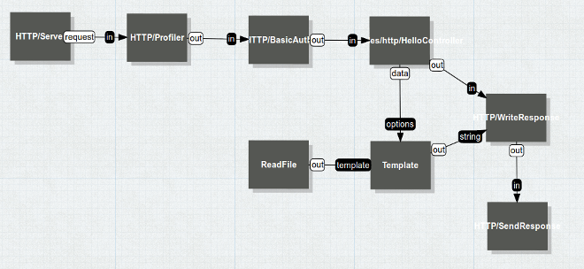

Watch the video
NoFlo presentation by Henri Bergius from JS.everywhere in Boston, October 15th 2011
NoFlo is a JavaScript implementation of Flow-Based Programming (FBP), a way of separating the control flow of software from the actual software logic. It helps you to organize large applications, especially when importing and modifying large data sets.
FBP itself is not a new idea: it comes from a term IBM used in the 70s to define the concepts of more manageable business workflows. NoFlo, however, refreshes these concepts and brings them to Node.js applications.
The MIT-licensed NoFlo library can either be used to run full flow-based applications or as a library for making complex workflows or asynchronous processes more manageable. It can also be used as an Extract, Transform, Load (ETL) tool in business applications.
NoFlo has been written in CoffeeScript for simplicity. The system is heavily inspired by J. Paul Morrison's book Flow-Based Programming.
Understand and design software visually
With NoFlo, your application consists of independent components that are connected together in a graph. This makes it possible to split your problem in logical areas that make sense, and to see how they connect with each other.

NoFlo applications can be designed using the DrawFBP tool, and visualized using the integrated web-based graph viewer.
Flow-Based Programming book
Flow-Based Programming, 2nd edition by J. Paul Morrison.
NoFlo and Flow-Based Programming
Wikipedia explains Flow-Based Programming as:
In computer science, flow-based programming (FBP) is a programming paradigm that defines applications as networks of "black box" processes, which exchange data across predefined connections by message passing, where the connections are specified externally to the processes. These black box processes can be reconnected endlessly to form different applications without having to be changed internally. FBP is thus naturally component-oriented.
Developers used to the Unix philosophy should be immediately familiar with FBP:
This is the Unix philosophy: Write programs that do one thing and do it well. Write programs to work together. Write programs to handle text streams, because that is a universal interface.
It also fits well in Alan Kay's original idea of object-oriented programming:
I thought of objects being like biological cells and/or individual computers on a network, only able to communicate with messages (so messaging came at the very beginning -- it took a while to see how to do messaging in a programming language efficiently enough to be useful).
Getting NoFlo
NoFlo is available via NPM. Just run:
$ npm install -g noflo
You can also watch and participate in the development of NoFlo on GitHub. Discussions about NoFlo and FBP in general happen in the Flow-Based Programming group. See also the NoFlo change log.
Other Flow-Based Programming implementations
- JavaFBP — the Java-based reference implementation of FBP
- C#FBP — C# port of JavaFBP
- GoFlow — minimalistic FBP implementation in the Go language
- Meemoo — web-based client-side implementation for audio/visual interactive applications
- Pypes — Python implementation for Extract, Load, Transform needs
- PhpFlo — PHP 5.3 port of NoFlo